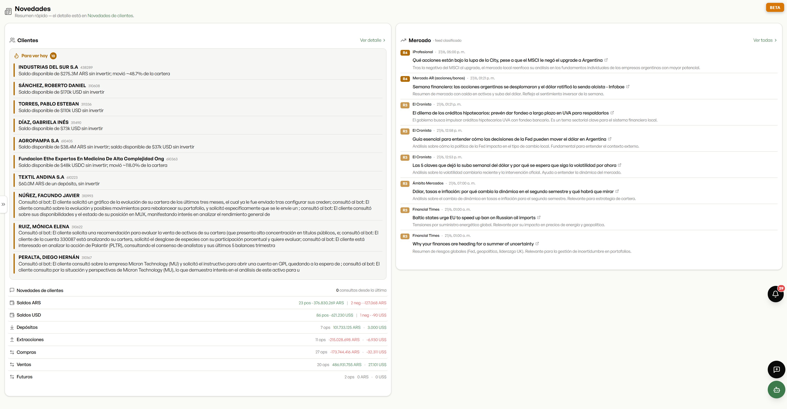
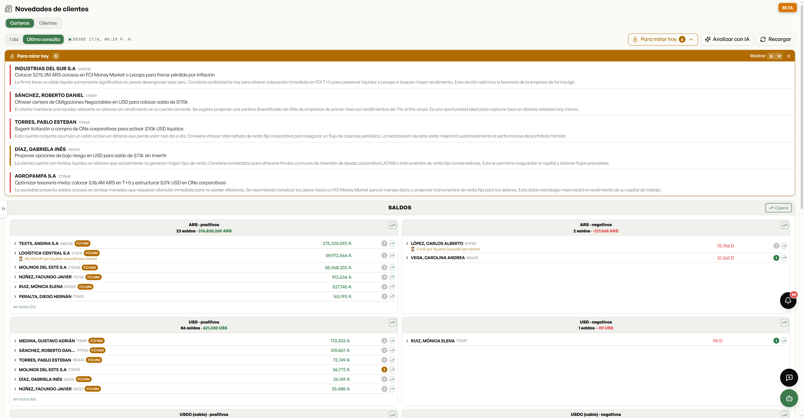
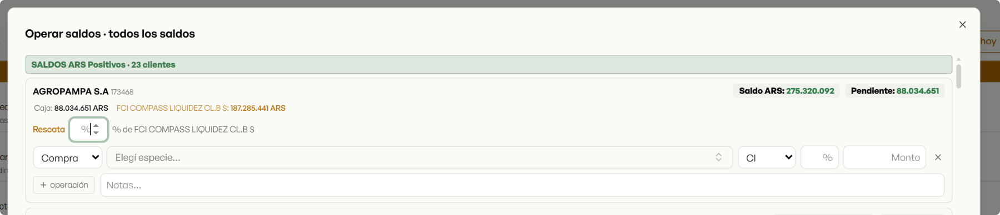
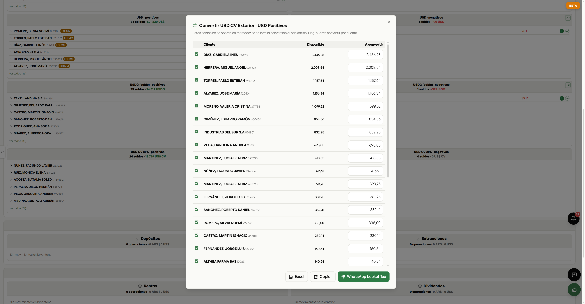
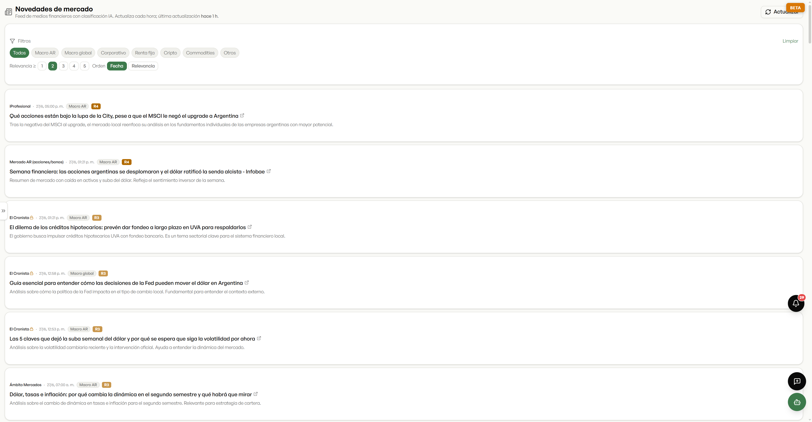

Un módulo para una sola pregunta: ¿qué cambió? — en el mercado, y en la cartera de cada uno de sus clientes. Todo lo que normalmente se pierde entre mil cosas, acá queda a la vista.

De un lado, lo que necesita cada cliente: a quién le quedó un saldo sin invertir, quién movió la cartera. Del otro, lo último del mercado. Y abajo, el saldo consolidado de toda la cartera por moneda. El resumen del día, en una sola pantalla.

La plataforma lee la cartera —elegís el último día o desde tu última consulta— y arma una lista de recomendaciones priorizadas. No es un dato suelto: es la próxima llamada, ya redactada.

El detalle de los saldos ociosos de toda la cartera, agrupados por moneda — se consideran tanto los saldos en caja como los del FCI Money Market. $376 millones en 23 cuentas en pesos, dólares en otras tantas, cada uno perdiendo valor mientras duerme. Y desde el botón Operar se arma toda la tanda de una.

Y el dólar Caja de Valores (USD CV Exterior), que no se opera en mercado, también: la plataforma arma la solicitud de conversión al BackOffice —elegís cuánto pasar por cada cuenta— y la exporta a Excel, la copia o la manda por WhatsApp. Nada queda afuera del sistema.

El feed de los medios financieros, clasificado por IA y filtrable por tema (macro local, macro global, corporativo, cripto, commodities…) y por relevancia. El productor lee en dos minutos lo que importa, sin abrir diez pestañas.
Lo importante de cada cliente y del mercado, ordenado y priorizado por IA — y cada novedad, en el fondo, una oportunidad para atender mejor y hacer negocio.